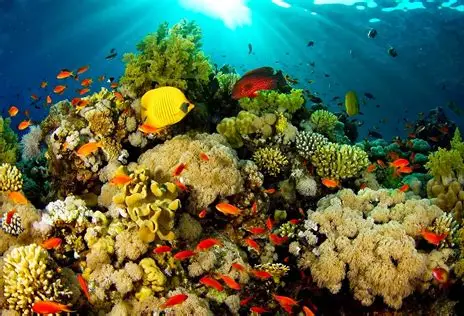

Bunaken
Pulau Bunaken di Manado adalah destinasi wisata bahari terkenal dunia, bagian dari Taman Nasional Bunaken, dengan keindahan terumbu karang, pantai pasir putih, dan lebih dari 20 spot diving kelas internasional. Lokasinya hanya sekitar 40 menit naik kapal dari Kota Manado, menjadikannya surga bagi pecinta snorkeling dan scuba diving.
